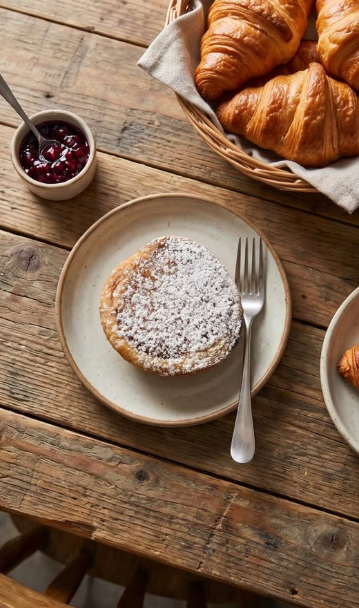
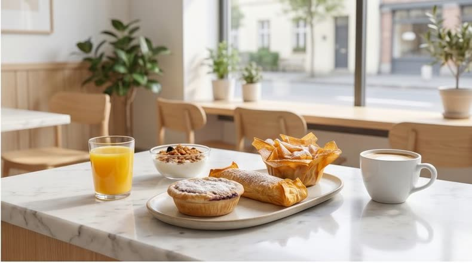
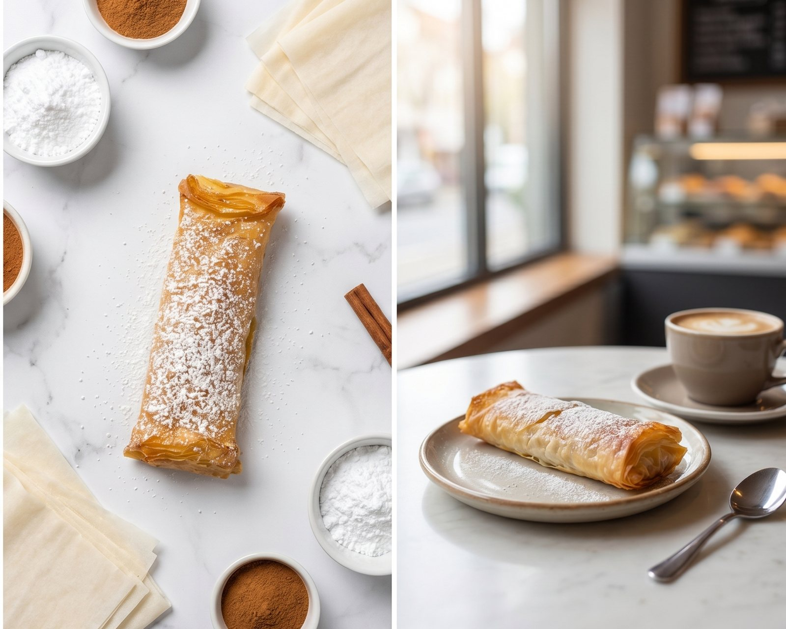
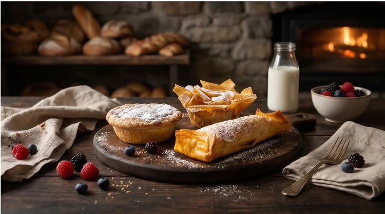
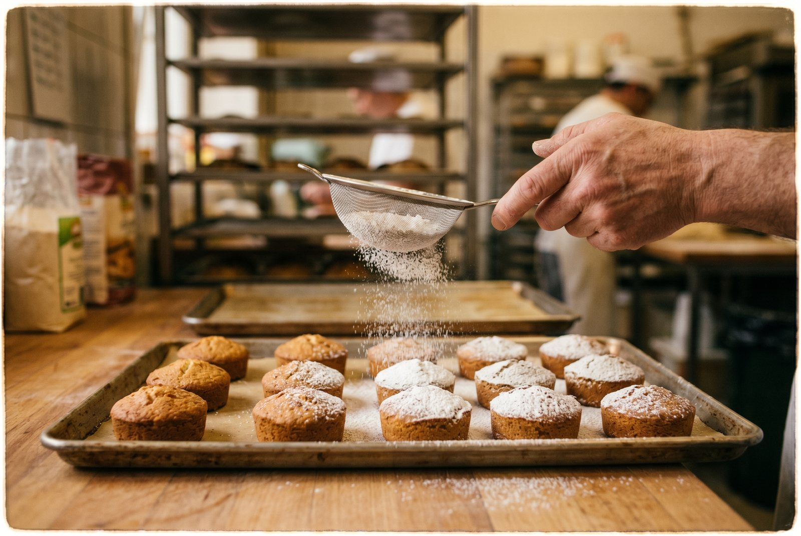

i.
Pastel de Chícharo
EspecialidadeMassa folhada dourada com recheio cremoso de chícharo — estaladiço por fora, macio por dentro.
Doçaria artesanal de Alvaiázere — chícharo, travesseiros e bolos de festa por encomenda.

O chícharo é a leguminosa que dá identidade a Alvaiázere — cultivada há gerações nestas terras e celebrada, desde 2003, no festival gastronómico “Alvaiázere Capital do Chícharo”.
Na Doce Felicidade transformamos esta herança em doçaria: o recheio de chícharo dos nossos pastéis, travesseiros e flores é o mesmo que levou o Público a escrever sobre os doces de Alvaiázere.
Três doces com o mesmo recheio de chícharo — muda a massa, mantém-se o sabor da nossa terra.

Massa folhada dourada com recheio cremoso de chícharo — estaladiço por fora, macio por dentro.

Camadas crocantes de massa filo com recheio de chícharo — o clássico da casa.

Pétalas de massa filo, douradas e delicadas, com o mesmo recheio de chícharo.
Preços no balcão e por encomenda — fale connosco no WhatsApp.
Bolos artesanais de longa duração, perfeitos para acompanhar o café ou para oferecer. Sete variedades:
À venda no balcão, em mercados da região e nos cafés e lojas que fornecemos.

Aniversários, batizados e festas de família: fazemos bolos personalizados por encomenda, combinando consigo sabor, tamanho e decoração.
Quanto mais cedo nos falar, melhor — bolos personalizados pedem tempo. Diga-nos a data, o número de pessoas e a ideia, e respondemos com orçamento.
Pedir orçamento no WhatsAppFornecemos cafés, lojas e mercearias da região com bolos secos, pastéis e travesseiros — produção própria, com regularidade combinada consigo.
Um olhar pela nossa doçaria. Clique para ampliar.
 Ampliar
Ampliar Ampliar
Ampliar
Ampliar
Ampliar
Ampliar
Ampliar
A Doce Felicidade é um negócio de família: nasceu em 2014, em Cabaços, e é gerido por quem amassa, recheia e coze cada doce.
Tudo é feito em pequenos lotes, à mão e com tempo. Vendemos ao balcão, nos mercados da região e por encomenda — e é provável que já tenha provado os nossos bolos secos no seu café habitual.
Rua dos Correios, n.º 32
3250-359 Cabaços, Alvaiázere
Estamos na vila de Cabaços, concelho de Alvaiázere. Se vier de fora, aproveite: o festival do chícharo enche a vila no início de outubro.